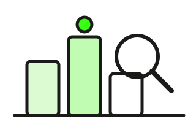

Rendite richtig lesen: Rendite ist nicht gleich Rendite
Dieselbe Anleihe, fünf verschiedene „Renditen“ – je nachdem, wer rechnet und was er einrechnet. Hier lernst du, welche Zahl was bedeutet und welche für dich zählt. Sechs Karten, jede mit Schaubild. Lesezeit: etwa 6 Minuten.

Kupon ist nicht Rendite
Der Kupon ist der Zins auf den Nennwert – 3 % auf 100. Du zahlst aber nicht 100, sondern den Kurs. Bei Kurs 96 bringen die 3 € Zins auf 96 € Kaufpreis schon 3,1 % – die laufende Verzinsung (englisch Current Yield).
Und am Ende bekommst du 100 zurück, obwohl du 96 bezahlt hast. Dieser Kursgewinn kommt obendrauf: Über fünf Jahre ergibt das 3,9 % pro Jahr – die Rendite bis Fälligkeit. Drei Zahlen, eine Anleihe.
Eine Anleihe: 3 % Kupon, Kurs 96, noch 5 Jahre
Bei Kurs über 100 dreht sich das Bild: Dann liegt die Rendite bis Fälligkeit unter dem Kupon.
Kurz gesagt: Kupon = Zins auf 100. Rendite = was du auf deinen Kurs bekommst, inklusive Kursgewinn oder -verlust bis zur Rückzahlung.
Rendite bis Fälligkeit: die Standardzahl
Wenn irgendwo nur „Rendite“ steht, ist fast immer die Rendite bis Fälligkeit gemeint (englisch Yield to Maturity). Sie fasst alles in einer Zahl pro Jahr zusammen: die Kupons, den Kursgewinn oder -verlust bis 100 und die Restlaufzeit.
Zwei Annahmen stecken drin: Du hältst bis zum Ende, und du legst jeden Kupon zum selben Zins wieder an. Verkaufst du früher oder liegt der Kupon auf dem Konto, weicht dein echtes Ergebnis ab – meist nur leicht.
Woraus die 3,9 % bestehen
Die exakte Rechnung zinst jede Zahlung ab (Barwert), deshalb sind es 3,9 und nicht genau 3,1 + 0,8. Der Rechner macht das taggenau.
Kurz gesagt: „Rendite“ heißt fast immer Rendite bis Fälligkeit: Kupon plus Kursdifferenz bis 100, auf ein Jahr gerechnet – gültig, wenn du bis zum Ende hältst.
Kündbar: Rechne mit der schlechteren Rendite
Darf der Emittent vorzeitig kündigen, gibt es eine zweite Rendite: bis zum Kündigungstermin (Yield to Call). Hast du über 100 gekauft, ist sie deutlich niedriger – der Kursverlust auf 100 fällt dann in wenige Jahre.
Profis rechnen beide und nehmen die schlechtere: die Rendite im schlechtesten Fall (englisch Yield to Worst). Mit ihr planst du, denn der Emittent kündigt genau dann, wenn es für ihn günstig ist – also für dich ungünstig. Warum und wann, steht bei den kündbaren Anleihen.
5 % Kupon, Kurs 104, fällig in 6 Jahren, kündbar in 2
Unter 100 gekauft? Dann ist meist die Rendite bis Fälligkeit die schlechtere – und die Kündigung wäre ein Gewinn.
Kurz gesagt: Kündbar heißt zwei Renditen. Rechne mit der schlechteren – Yield to Worst.
Dieselbe Rendite, drei Zahlen: Kurs und Formel entscheiden
Selbst die Rendite bis Fälligkeit ist nicht eindeutig. Zu welchem Kurs? Der letzte Umsatz ist Vergangenheit; kaufen kannst du nur zum Briefkurs, und der liegt höher. Mit welcher Zinsformel? Europa rechnet jährlich (ISMA), die USA halbjährlich – bei 4 % macht das 0,04 Punkte aus.
Bei langen Laufzeiten sind das Nachkommastellen. Bei wenigen Monaten Restlaufzeit wird es spürbar: Da entscheiden Briefkurs, Stückzinsen und der genaue Valutatag über einen halben Prozentpunkt – und eine veraltete Taxe zeigt oft eine Rendite, die es gar nicht gibt.
3 % Kupon, noch 5 Jahre – je nach Kurs und Formel
(halbjährlich)3,96 %statt 4,00 % jährlich – gleiche Zahlung
Die Anleihen-Suche dieser Website rechnet zum letzten Frankfurter Schlusskurs (ISMA, jährlich) und markiert kurz laufende Anleihen mit unplausibel hoher Rendite als „wahrscheinlich zu hoch“.
Kurz gesagt: Deine Rendite ist die zum Briefkurs, mit Stückzinsen, am Tag der Order. Alles andere ist eine Schätzung.
Was nach Steuern und Inflation bleibt
Von den 3,9 % nimmt der Staat 26,375 % (Abgeltungsteuer mit Solidaritätszuschlag, ohne Kirchensteuer) – und zwar auf den Kupon und auf den Kursgewinn bis 100, sobald er realisiert ist. Bleiben 2,9 % netto, oberhalb des Sparerpauschbetrags.
Dann die Inflation: Bei 2 % Preissteigerung bleibt real knapp 0,9 %. Das ist die Zahl, die deine Kaufkraft beschreibt – und die auf Broker-Seiten nirgends steht. Wie sie sich seit 1970 entwickelt hat, zeigt der Realzins.
Von brutto zu real
Faustregel: Zins × 0,74 = netto. Damit netto die Inflation schlägt, braucht es Inflation ÷ 0,74 brutto – bei 2 % also 2,7 %.
Rechner: Zinsen netto nach Steuer →Kurz gesagt: Brutto × 0,74 = netto. Netto minus Inflation = real. Nur die letzte Zahl ist dein Ertrag.
Wo welche Zahl steht
Jede Quelle zeigt eine andere Rendite – und sagt selten, welche. Broker nennen meist die Rendite bis Fälligkeit zum letzten Kurs, manchmal nur die laufende. ETF-Factsheets zeigen die Durchschnittsrendite des Korbs vor Kosten – zieh die TER ab. Floater haben gar keine sinnvolle Rendite bis Fälligkeit, weil der künftige Kupon nicht feststeht; bei Stufenzins-Anleihen steht er fest, wechselt aber – viele Quellen zeigen deshalb keine Rendite.
Die Frage, die du dir bei jeder Zahl stellst: Bis wann, zu welchem Kurs, und was ist schon abgezogen?
Renditeangaben lesen
| Quelle | Zeigt meist | Achte auf |
|---|---|---|
| Broker-App | Rendite bis Fälligkeit zum letzten Kurs | Briefkurs, kündbar? |
| Börsenseite | Rendite bis Fälligkeit, manchmal laufende | Welche von beiden? |
| ETF-Factsheet | Rendite des Korbs vor Kosten | TER abziehen |
| Diese Website | Rendite bis Fälligkeit, ISMA, Schlusskurs | „–“ bei Floatern und kündbaren Anleihen |
Kein Wert bei Floatern, Stufenzins-Anleihen und Wandelanleihen – dort wäre jede Rendite bis Fälligkeit geraten.
Suche: fester Kupon, ohne nachteilige Kündigung →Kurz gesagt: Drei Fragen an jede Rendite: bis wann, zu welchem Kurs, was ist abgezogen?
Diese Seite erklärt Renditebegriffe. Sie empfiehlt keine Anlage und ist keine Steuerberatung. Die Zahlen sind gerundet.
Datenquellen und Methodik
Rechnung. Rendite bis Fälligkeit nach ISMA (jährliche Verzinsung, glatte Jahre, ohne Stückzinsen): 3 % Kupon, Kurs 96, 5 Jahre → 3,896 %; Kurs 96,40 → 3,804 %; laufende Verzinsung 3 ÷ 96 = 3,125 %. Kündbare Anleihe (Karte 3): 5 % Kupon, Kurs 104, Fälligkeit in 6 Jahren → 4,23 %; Kündigung zu 100 in 2 Jahren → 2,91 %. Halbjährliche Konvention (Karte 4): 2 × (√1,04 − 1) = 3,96 % entspricht 4,00 % jährlich. Die Zerlegung in Karte 2 (3,1 + 0,8) ist eine Näherung; die exakte Rendite berücksichtigt die Abzinsung.
Steuern. Abgeltungsteuer 25 % plus Solidaritätszuschlag 5,5 % darauf = 26,375 %; mit Kirchensteuer 27,82 % (8 %) bzw. 27,99 % (9 %). Kursgewinne bis zur Rückzahlung sind steuerpflichtig, Verluste verrechenbar; Sparerpauschbetrag 1.000 € (Einzelveranlagung) bzw. 2.000 € (Zusammenveranlagung). Allgemeine Information, keine Steuerberatung; Stand September 2026.
Website. Die Anleihen-Suche rechnet die Rendite bis Fälligkeit aus dem letzten Schlusskurs der Börse Frankfurt (Bundeswertpapiere: Bundesbank), ISMA, nur bei festem Kupon und Rückzahlung am Ende; Anleihen mit unter einem Jahr Restlaufzeit und Rendite deutlich über Bund sind als „wahrscheinlich zu hoch“ gekennzeichnet (Methodik dort unter „Datenquellen und Methodik“).